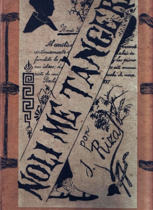
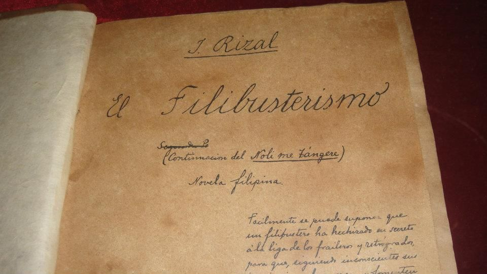
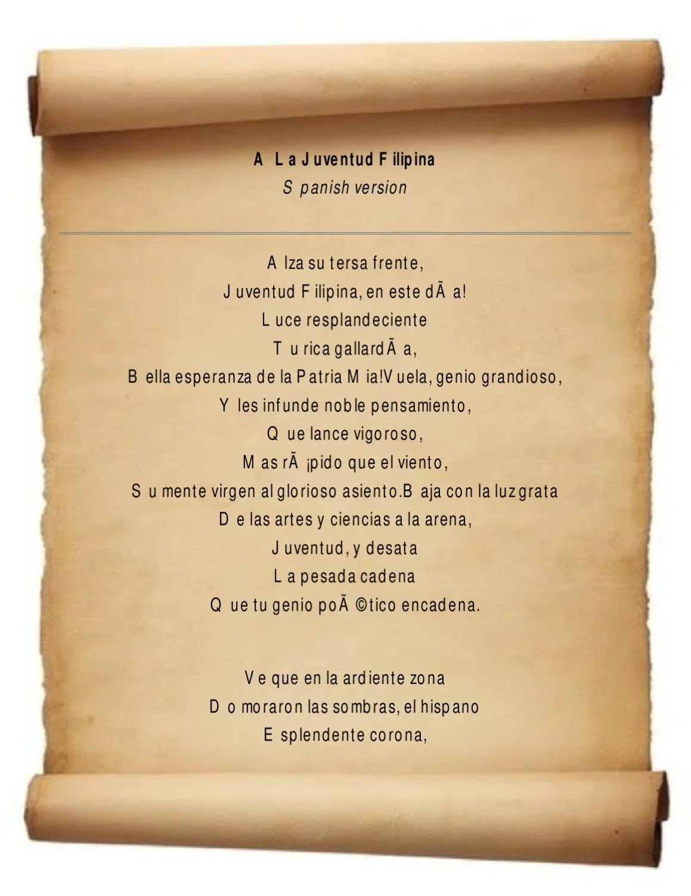
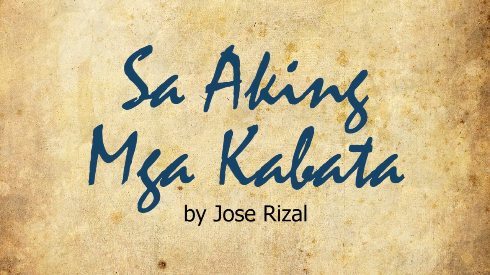

Maikling Talambuhay ni José Rizal
Si Dr. José Protacio Rizal Mercado y Alonzo Realonda ay ang pambansang bayani ng Pilipinas.
Siya ay ipinanganak noong Hunyo 19, 1861, sa Calamba, Laguna. Siya ang ika-pito
sa labing-isang anak nina Francisco Mercado Rizal at Teodora Alonzo.
Kabataan
Bata pa lamang ay ipinakita na niya ang katalinuhan. Sa edad na tatlo, marunong na siyang bumasa,
at sa edad na walo, naisulat niya ang kanyang unang tula, Sa Aking Mga Kabata.
Lumaki siyang may malasakit sa bayan dahil sa mga kwento ng kanyang ina tungkol sa kasaysayan
at pagdurusa ng mga Pilipino sa ilalim ng mga Espanyol.
Edukasyon
- Ateneo Municipal de Manila - Nagtapos bilang Batsilyer ng Sining.
- Unibersidad ng Santo Tomas -Nag-aral ng medisina ngunit lumipat sa ibang bansa dahil sa diskriminasyon.
-
Universidad Central de Madrid -Nagtapos ng Medisina at Filosopiya.
Nagpatuloy ng pag-aaral sa Alemanya, Pransya, at Belgium, kung saan natutunan niya ang iba't ibang wika at naging bihasa sa higit 22 wika.
Karera
Isang manggagamot, manunulat, makata, pintor, iskultor,
arkitekto, at dalubwika.
Siya rin ay isang reformista, hindi isang rebolusyonaryo. Ginusto niyang baguhin ang sistema sa mapayapang paraan.
Mga Akda ni José Rizal

Noli Me Tangere (Huwag Mo Akong Salingin)
Isang nobelang sumasalamin sa lipunang Pilipino sa ilalim ng kolonyalismo.
Petsa ng Pagkakalathala: 1887
Tema:
Inilantad ni Rizal ang mga pang-aabuso at katiwalian sa ilalim ng pamahalaang kolonyal at simbahan.
Buod:
Sinusundan ng nobela ang buhay ni Crisostomo Ibarra, isang edukadong Pilipino na bumalik mula sa Europa upang magtatag ng paaralan. Sa kabila ng kanyang mapayapang layunin, nasadlak siya sa mga intriga at katiwalian na umabot sa trahedya.
Pangunahing Tauhan:
- Crisostomo Ibarra: Ang pangunahing karakter na naniniwala sa edukasyon bilang susi sa pagbabago.
- Maria Clara: Ang kanyang kasintahan, simbolo ng puri at dignidad ng mga Pilipina.
Epekto:
Ang Noli Me Tangere ay nagbigay inspirasyon sa mga Pilipino upang buksan ang kanilang mata sa mga abuso ng kolonyal na pamamahala.
Learn More

El Filibusterismo (Ang Paghahari ng Kasakiman)
Ang karugtong ng Noli Me Tangere na tumutuligsa sa kawalang-katarungan.
Petsa ng Pagkakalathala: 1891
Tema:
Tumatalakay sa rebolusyon at desperasyon ng mga Pilipino para sa kalayaan.
Buod:
Nagbalik si Crisostomo Ibarra bilang Simoun, isang mayamang alahero na nais maghiganti. Sa pamamagitan ng rebolusyon, hinangad niyang ibagsak ang mapang-aping sistema.
Pangunahing Tauhan:
- Simoun: Simbolo ng galit at pagkadismaya ni Rizal sa kawalan ng pagbabago.
- Basilio: Nagpapakita ng pagpili sa mapayapang paraan ng pagbabago.
Epekto:
Ang nobela ay nagbigay ng mas madilim na pananaw sa rebolusyonaryong landas ngunit nananatiling mahalagang aral tungkol sa tamang paraan ng pagbabago.
Learn More

A la Juventud Filipina (Sa Kabataang Pilipino)
Isang tula na nagpaparangal sa kabataang Pilipino at ang kanilang papel para sa bayan.
Petsa ng Pagkakalathala: 1879
Tema:
Ang A la Juventud Filipina ay isang inspirasyonal na pahayag ni Rizal sa kabataan upang kilalanin ang kanilang halaga at gampanan ang kanilang tungkulin bilang tagapagtaguyod ng liwanag, katarungan, at pagbabago para sa bayan.
Sa tula, ipinahayag niya ang kanyang tiwala sa kakayahan ng kabataan bilang susi sa magandang kinabukasan ng Pilipinas.
Epekto:
Nagsisilbing inspirasyon ito sa mga kabataan na gamitin ang kanilang talino at kakayahan upang makapaglingkod sa bayan.
Learn More

Sa Aking Mga Kabata
Isang tula tungkol sa pagmamahal sa sariling wika at bayan.
Petsa ng Pagkakalathala: 1869
Tema:
Kahalagahan ng pagmamahal sa sariling wika bilang simbolo ng kalayaan at pagkakakilanlan ng isang bansa.
Epekto:
Nagtuturo ito sa mga kabataan na pahalagahan at mahalin ang sariling wika bilang simbolo ng kanilang pagka-Pilipino.
Learn More